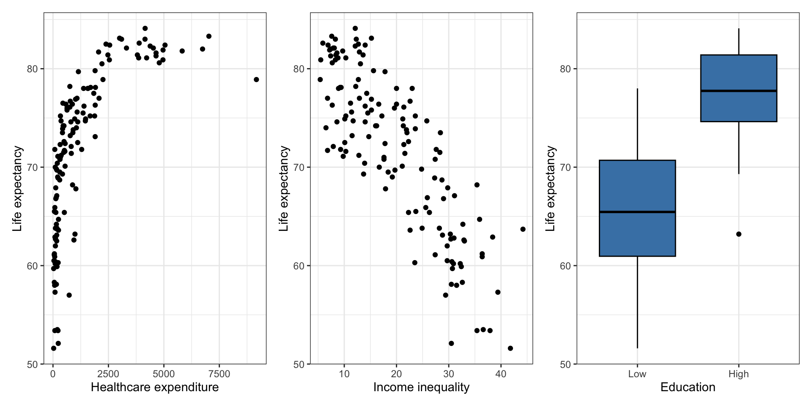

Variable transformations cont’d
Mar 06, 2025
Announcements
HW 03 due March 20 at 11:59pm
Next project milestone: Exploratory data analysis due March 20
- Work on it in lab March 7
Computing set up
Topics
- Log-transformation on the predictor
- Identify linear models
Variable transformations
Data: Life expectancy in 140 countries
The data set comes from Zarulli et al. (2021) who analyze the effects of a country’s healthcare expenditures and other factors on the country’s life expectancy. The data are originally from the Human Development Database and World Health Organization.
There are 140 countries (observations) in the data set.
Variables
life_exp: The average number of years that a newborn could expect to live, if he or she were to pass through life exposed to the sex- and age-specific death rates prevailing at the time of his or her birth, for a specific year, in a given country, territory, or geographic income_inequality. ( from the World Health Organization)income_inequality: Measure of the deviation of the distribution of income among individuals or households within a country from a perfectly equal distribution. A value of 0 represents absolute equality, a value of 100 absolute inequality (based on Gini coefficient). (from Zarulli et al. (2021))
Variables
education: Indicator of whether a country’s education index is above (High) or below (Low) the median index for the 140 countries in the data set.- Education index: Average of mean years of schooling (of adults) and expected years of school (of children), both expressed as an index obtained by scaling wit the corresponding maxima.
health_expend: Per capita current spending on on healthcare goods and services, expressed in respective currency - international Purchasing Power Parity (PPP) dollar (from the World Health Organization)
Log transformation on a predictor variable
Variability in life expectancy
Let’s consider a model using a country’s healthcare expenditure, income inequality, and education to predict its life expectancy
Original model
| term | estimate | std.error | statistic | p.value |
|---|---|---|---|---|
| (Intercept) | 78.575 | 1.775 | 44.274 | 0.000 |
| health_expenditure | 0.001 | 0.000 | 4.522 | 0.000 |
| income_inequality | -0.484 | 0.061 | -7.900 | 0.000 |
| educationHigh | 2.020 | 1.168 | 1.730 | 0.086 |
Original model: Residuals
Look at residuals vs. each predictor to determine which variable has non-linear relationship with life expectancy.
Residuals vs. predictors
There is a non-linear relationship is between health expenditure and life expectancy.
Log Transformation on \(X\)
Try a transformation on \(X\) if the scatterplot in EDA shows non-linear relationship and residuals vs. fitted looks parabolic
EDA
Model with Transformation on \(X_j\)
When we fit a model with predictor \(\log(X_j)\), we fit a model of the form
\[ \mathbf{Y} = \mathbf{X}\boldsymbol{\beta} + \boldsymbol{\epsilon}, \quad \boldsymbol{\epsilon} \sim N(\mathbf{0}, \sigma^2_{\epsilon}\mathbf{I}) \]
such that \(\mathbf{X}\) has a column for \(\log(X_j)\) .
The estimated regression model is
\[ \begin{aligned} \hat{\mathbf{Y}} &= \mathbf{X}\hat{\boldsymbol{\beta}} \\[8pt] \Rightarrow \quad &\hat{y}_i = \hat{\beta}_0 + \hat{\beta}_1x_{i1} + \ldots + \hat{\beta}_j\log(x_{ij}) + \dots + \hat{\beta}_px_{ip} \end{aligned} \]
Model interpretation
\[ \hat{y}_i = \hat{\beta}_0 + \hat{\beta}_1x_{i1} + \ldots + \hat{\beta}_j\log(x_{ij}) + \dots + \hat{\beta}_px_{ip} \]
Intercept: When \(x_{i1} = \dots = \log(x_{ij}) = \dots = x_{ip} = 0\) , \(y_i\) is expected to be \(\hat{\beta}_0\), on average, holding all else constant.
- \(\log(x_{ij}) = 0\) when \(x_{ij} = 1\)
Coefficient of \(X_j\): When \(x_{ij}\) is multiplied by a factor of \(C\), \(y_i\) is expected to change by \(\hat{\beta}_1\log(C)\) units, on average, holding all else constant.
- Example: When \(x_{ij}\) is multiplied by a factor of 2, \(y_i\) is expected to increase by \(\hat{\beta}_1\log(2)\) units, on average, holding all else constant.
Model with log(X)
| term | estimate | std.error | statistic | p.value |
|---|---|---|---|---|
| (Intercept) | 59.151 | 3.184 | 18.576 | 0.000 |
| log(health_expenditure) | 3.092 | 0.396 | 7.814 | 0.000 |
| income_inequality | -0.362 | 0.058 | -6.225 | 0.000 |
| educationHigh | -0.168 | 1.103 | -0.152 | 0.879 |
Interpret the intercept in the context of the data.
Interpret the effect of health expenditure in the context of the data.
Interpret the effect of education in the context of the data.
Model with log(X): Residuals
Comparing residual plots

Is a model with log-transformed response and/or predictor still a “linear” model?
“Linear” model
What does it mean for a model to be a “linear” model?
Linear models are linear in the parameters, i.e. given an observation \(y_i\)
\[ y_i = \beta_0 + \beta_1f(x_{i1}) + \dots + \beta_pf(x_{ip}) + \epsilon_i \]
The functions \(f_1, \ldots, f_p\) can be non-linear as long as \(\beta_0, \beta_1, \ldots, \beta_p\) are linear in \(Y\)
Identify the linear models
\(y_i = \beta_0 + \beta_1x_{i1} + \beta_2x_{i1}^2 + \beta_3x_{i2} + \epsilon_i\)
\(y_i = \beta_1x_{i1} + \beta_2x_{i2} + \beta_3x_{i1}x_{i2} + \epsilon_i\)
\(y_i = \beta_0 + \beta_1\sin(x_{i1} + \beta_2x_{i2}) + \beta_3x_{i3} + \epsilon_i\)
\(y_i = \beta_0 + \beta_1e^{x_{i1}} + \beta_2e^{x_{i2}} + \epsilon_i\)
\(y_i =e^{(\beta_0 + \beta_1x_{i1} + \beta_2x_{i2} + \beta_3x_{i3})} + \epsilon_i\)
Learn more
See Log Transformations in Linear Regression for more details about interpreting regression models with log-transformed variables.
Recap
- Introduced log-transformation on the predictor
- Identified linear models
Remaining questions?
Please submit any questions you have about multicollinearity and variable transformations.